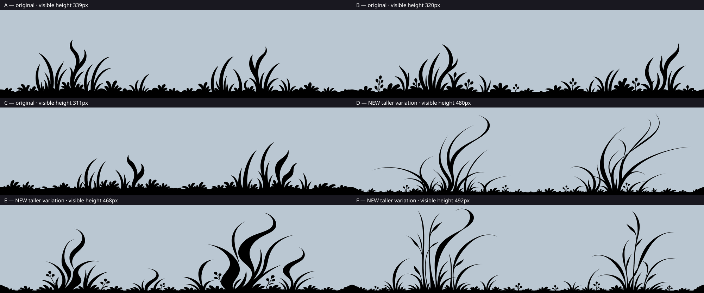

Longer, taller black foreground silhouettes
D, E and F reach 468–492px above the bottom, with long curling blades, wavy fronds and sparse reed-like shoots. They connect to the original A/B/C pieces.
The light field reveals the silhouettes; game PNGs have transparent backgrounds. Tall pieces occupy more vertical space, so mix them with the lower pieces for open stretches.
Original and taller variations
